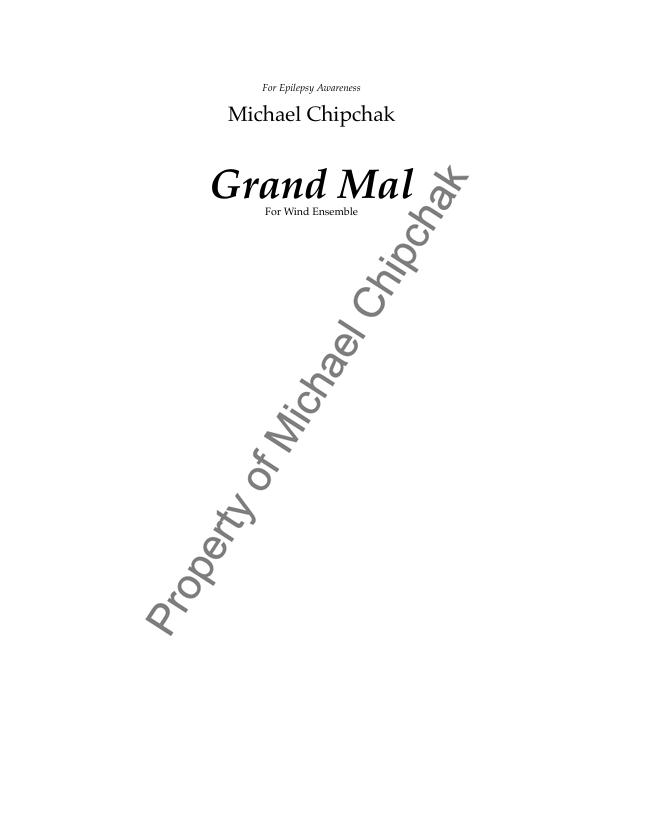
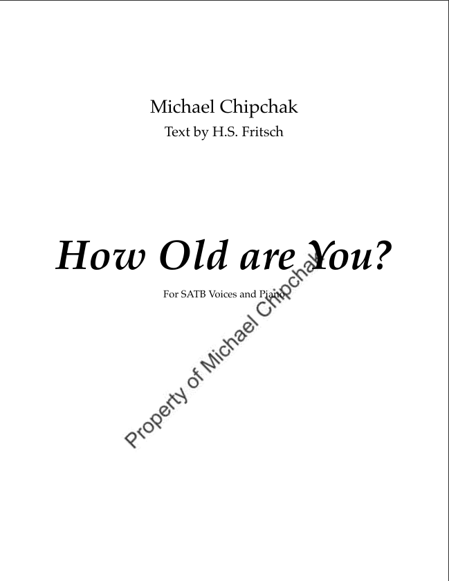

About Michael
Michael Chipchak (b. 1999) is a composer, vocalist, multi-instrumentalist, and graduate student in Music Theory and Composition at the University of Wisconsin Milwaukee. He also serves as a teaching assistant in the Composition and Theory Department.
He holds a Bachelor of Music in Theory and Composition from Elmhurst University, where he focused on 20th-century post-tonal theory and experimental composition.
After being diagnosed with epilepsy at age 19, Chipchak began to discover his unique musical voice. Influenced by the avant-garde and counterculture movements of the 20th century, he draws inspiration from composers such as Claude Debussy, John Cage, and Samuel Barber. His music often explores impressionistic textures, sharp dissonances, and pointillistic techniques, shaped through a programmatic lens that connects physical sensation, mental health, and sound.
Rather than creating music for easy listening, Chipchak aims to craft pieces that demand attention. His work invites listeners to feel each moment, encouraging emotional and physical responses to the stories his music tells.
Portfolio
Download: Portfolio
Music
A Silhouette of Natural Beauty
Grand Mal
How Old Are You
Sample Downloads
MP3 Samples
Sheet Music Samples
Contact Me
- Email Address: michaelchipchak.composer@gmail.com
- Phone Number: 847-917-1056